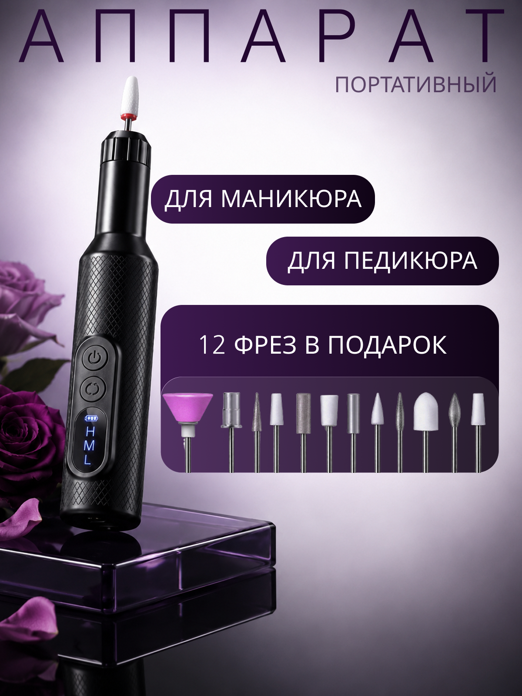
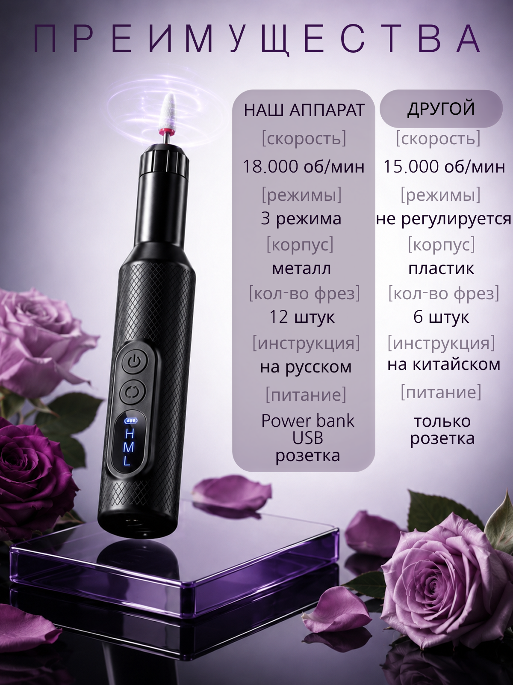
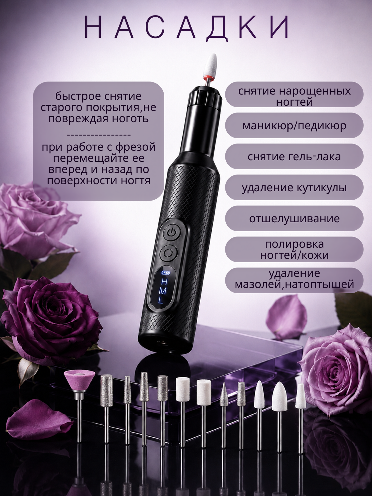
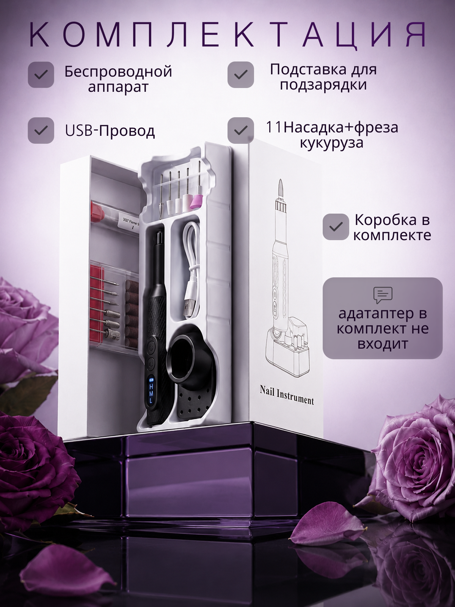

Nail Instrument
Серия инфографических карточек для портативного фрезера: назначение, сравнение с конкурентом, насадки и комплектация.

- Клиент
- Производитель аппаратов для маникюра и педикюра
- Задача
- Разработать серию карточек товара для маркетплейса под портативный беспроводной фрезер: назначение, сравнение с конкурентом по характеристикам, насадки и полную комплектацию — в едином премиальном тёмно-фиолетовом стиле.
- Роль
- Графический дизайнер: концепция серии, инфографика, работа со сравнительной таблицей, типографика, компоновка предметной съёмки, подготовка под формат карточек маркетплейса.
Категория «аппараты для маникюра» на маркетплейсе — это в первую очередь сравнение характеристик, поэтому вместо мягкой лайфстайл-подачи выбран более технологичный, почти люксовый визуальный код: глубокий фиолетовый градиент, свечение вокруг насадки, розы как единственный «человеческий» элемент, снимающий холодность технического продукта.
Серия выстроена как путь принятия решения покупателем: первая карточка — общее назначение и ключевое преимущество (12 фрез в подарок), вторая — прямое сравнение «наш аппарат / другой» по конкретным пунктам (скорость, режимы, корпус, число фрез, инструкция, питание) — этот слайд прицельно закрывает сомнение о выборе среди похожих товаров. Третья раскрывает функциональность через полный список насадок и их применений, четвёртая — снимает вопрос о полноте комплекта, включая честную пометку, что адаптер в комплект не входит.




Серия карточек закрыла ключевые точки сомнения покупателя техники — прямое сравнение с конкурентом, полный список насадок и честная комплектация — и выстроила единый премиальный образ бренда.